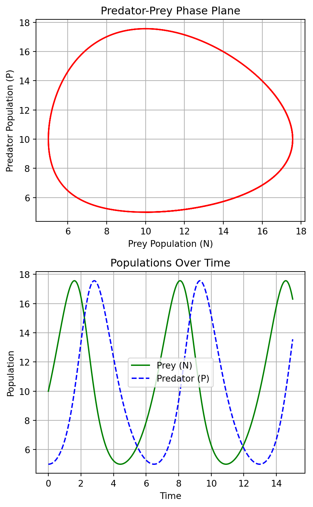

5 Interacting populations
Ecological systems are complex networks of interactions involving multiple species, which can be categorized into different trophic levels based on their roles in the ecosystem. Understanding these interactions is crucial for studying ecosystem dynamics, population control, and biodiversity. While the study of multiple interacting species can become quite intricate, analyzing the interactions between two species offers a more manageable framework while still providing significant insights into the dynamics of ecological relationships. This chapter focuses on two-species interactions, offering a foundational understanding that can be applied or extended to more complex scenarios.
Mathematical Framework for Two-Species Interactions
To model the interactions between two species, we employ a system of two autonomous coupled ordinary differential equations (ODEs). These equations describe the rate of change of the population sizes over time, capturing the essence of their interaction. The general form of these equations is given by: \[ \frac{dX}{dt} = f(X,Y), ~~~~~ \frac{dY}{dt} = g(X,Y). \tag{5.1}\] where \(X\) and \(Y\) represent the population sizes of the two species, and \(f(X,Y)\) and \(g(X,Y)\) are functions that describe how the populations influence each other. These functions are crafted based on the nature of the interaction between the species, reflecting the underlying biological processes.
Types of Two-Species Interactions
The dynamics of two interacting species are generally categorized into three primary types, each with its unique characteristics and implications for the populations involved:
Predator-Prey Interactions: In this type of interaction, one species (the predator) feeds on the other (the prey). The population growth of the predator increases with increased availability of the prey, while the prey population is negatively affected by the presence of the predator. Mathematically, this interaction often leads to oscillatory dynamics, exemplified by the classic Lotka-Volterra model.
Competition: When two species compete for the same resources, their growth rates are adversely affected by their interaction. This situation is characterized by negative impacts on both species’ growth rates, potentially leading to the exclusion of one species or to a stable coexistence, depending on the specific conditions and competition coefficients.
Mutualism: This positive interaction benefits both species, leading to an increase in their growth rates. The mutualistic relationship is such that each species provides some benefit to the other, which could be in the form of nutrients, shelter, or any other factor that enhances growth or survival.
While this chapter focuses on these primary interaction types, it’s important to recognize the spectrum of interactions in nature, including parasitism, amensalism, and others. Moreover, the real-world ecological systems often exhibit a mix of these interactions, adding layers of complexity. By starting with the analysis of two-species systems, we lay the groundwork for understanding more intricate interactions and the overall dynamics of ecosystems.
5.1 Lotka-Volterra Model
The Lotka-Volterra model, developed independently by Alfred Lotka in 1925 and Vito Volterra in 1926, serves as a foundational mathematical model for understanding the dynamic interplay between a prey population (denoted by \(N\)) and a predator population (denoted by \(P\)).
Model Formulation
The prey population, in the absence of predators, grows exponentially with a per capita growth rate \(a > 0\). However, the prey die due to being eaten by predators, and we assume that the per-capita mortality rate grows in proportion to the abundance of predators, with some proportionality constant \(b \geq 0\). This leads to the equation \[ \frac{dN}{dt} = N(a - bP). \]
Conversely, the predators benefit from the abundance of prey and we encode that by giving them a per-capita growth \(cN\), where \(c \geq 0\). We assume that the per capita mortality rate is a constant \(d\). This yields the following equation for the predator dynamics: \[ \frac{dP}{dt} = P(cN - d). \]
The two plots in Figure 5.1 generated from the Lotka-Volterra model provide a visual representation of the dynamics between a predator and prey population over time. The phase plane plot illustrates the cyclic nature of the interaction between the prey (N) and predator (P) populations, depicting a closed trajectory that indicates the continuous oscillation of both populations in relation to each other: as the prey population increases, it provides more food for the predators, which then also increase in number. However, as the predator population grows, it puts more pressure on the prey, leading to a decline in the prey population, which eventually causes the predator population to decrease due to lack of food.
The plot at the bottom shows the prey and predator populations over time. It highlights the periodic rises and falls of each population, showing how the increase in the prey population precedes the increase in the predator population, followed by a subsequent decline in the prey and then the predator population. The time series plot complements the phase plane by showing how the dynamics unfold over time.
Non-dimensionalization of the Model
Non-dimensionalization is a crucial step to reduce the complexity of the model by decreasing the number of parameters, thereby simplifying the analysis. By introducing the non-dimensional variables \(u = \frac{cN}{d}\), \(v = \frac{bP}{a}\), and the non-dimensional time \(\tau = at\), along with the parameter \(\alpha = \frac{d}{a}\), we can transform the Lotka-Volterra equations into a more tractable form:
\[ \frac{du}{d\tau} = u(1 - v), \quad \frac{dv}{d\tau} = \alpha v(u - 1). \]
Phase plane paths
To determine the phase plane paths we consider \(v\) as a function of \(u\) which satisfies the equation \[ \frac{dv}{du} = \frac{\frac{dv}{d\tau}}{\frac{du}{d\tau}} = \frac{\alpha v(u - 1)}{u(1 - v)}. \] We rewrite this by separating the variable and integrate: \[ \int\frac{1-v}{v}dv = \alpha \int\frac{u-1}{u}du. \] This gives \[ \log v - v = \alpha (u - \log u) + \text{constant}. \] So even though \(u\) and \(v\) are changing with time, this particular combination stays constant. This is a conserved quantity. Let us suggestively call the constant of the motion \(H\) for Hamiltonian and write it in terms of new variables \(p = \log u\) and \(q = \log v\): \[ H(q,p)= v- \log v + \alpha (u - \log u) = e^q - q + \alpha(e^p - p). \] Hamilton’s equations \[\dot{q} = \frac{dH}{dp},~~~~\dot{p} = -\frac{dH}{dq}\] then reproduce our equations of motion.
This formulation underscores the conservative nature of the model, where the energy-like quantity \(H\) is conserved, leading to neutrally stable periodic orbits. This Hamiltonian nature is a rather special feature of the Lotka-Volterra model. Any slight modification of the model will destroy the conserved quantity and the periodic orbits. Thus we should not expect to see such perfect periodic predator-prey cycles in nature. We will discuss more realistic predator-prey models later.
5.2 Linear Stability Analysis
Before we study more realistic models, we revisit the concept of linear stability analysis, an essential tool in understanding the dynamics near the fixed points of systems described by autonomous coupled ordinary differential equations (ODEs) of the form
\[ \frac{dX}{dt} = f(X,Y), \quad \frac{dY}{dt} = g(X,Y). \]
Let us denote the fixed points (stable states) of the system as \((x^*, y^*)\). They satisfy \(f(x^*, y^*) = 0\) and \(g(x^*, y^*) = 0\).
Linearization around the Fixed Points
To analyze the stability of these fixed points, we introduce small perturbations \(x\) and \(y\) around them, setting \(X = x^* + x\) and \(Y = y^* + y\). By applying a Taylor expansion and retaining only the linear terms, we obtain a linearized system:
\[ \frac{d}{dt}\begin{pmatrix} x \\ y \end{pmatrix} = \mathbf{A}(x^*, y^*) \begin{pmatrix} x \\ y \end{pmatrix}, \]
where the Jacobian matrix \(\mathbf{A}\) is defined as:
\[ \mathbf{A} = \begin{pmatrix} f_X & f_Y \\ g_X & g_Y \end{pmatrix}_{(x^*, y^*)}. \]
Eigenvalue Analysis for Stability
The solution to the linearized system takes the form \((x, y) = \mathbf{v} e^{\lambda t}\), where \(\mathbf{v}\) is an eigenvector of \(\mathbf{A}\), and \(\lambda\) is the corresponding eigenvalue. By setting the determinant of \(\mathbf{A} - \lambda \mathbf{I}\) to zero, we obtain the characteristic equation:
\[ \det(\mathbf{A} - \lambda \mathbf{I}) = \begin{vmatrix} f_X - \lambda & f_Y \\ g_X & g_Y - \lambda \end{vmatrix}_{(x^*, y^*)} = 0, \]
which leads to the eigenvalues:
\[ \lambda = \frac{\text{Tr} \mathbf{A} \pm \sqrt{(\text{Tr} \mathbf{A})^2 - 4\det \mathbf{A}}}{2}. \]
The stability of the fixed point is determined by the sign of the real parts of the eigenvalues:
- If both eigenvalues have negative real parts, the fixed point is stable (attracting).
- If both eigenvalues have positive real parts, the fixed point is unstable (repelling).
- If the eigenvalues have real parts of opposite signs, the fixed point is a saddle point, which is unstable.
- For a complex conjugate pair of eigenvalues, if the real part is positive, the system exhibits an unstable spiral; if the real part is negative, the system exhibits a stable spiral.
This analysis is pivotal for understanding how small deviations from equilibrium evolve over time, providing insights into the system’s long-term behavior near the fixed points. For instance, in the context of the predator-prey dynamics, such analysis helps elucidate under what conditions the populations will return to equilibrium after a disturbance or potentially diverge away from it.
Example 5.1 (Linear Stability Analysis of the Lotka-Volterra Model) To explore the stability of steady states in the Lotka-Volterra model, we analyze the system near its equilibrium points using the Jacobian matrix \(\mathbf{A}\). For the non-dimensionalized Lotka-Volterra system, the Jacobian matrix is given by \[ \mathbf{A} = \begin{pmatrix} 1 - v & -u \\ \alpha v & \alpha (u - 1) \end{pmatrix}. \]
Steady State at \((u, v) = (0, 0)\)
For the equilibrium point \((u, v) = (0, 0)\), we substitute these values into the Jacobian matrix and find the eigenvalues:
\[ \mathbf{A} = \begin{pmatrix} 1 & 0 \\ 0 & -\alpha \end{pmatrix}. \]
The eigenvalues are \(\lambda_1 = 1\) and \(\lambda_2 = -\alpha\), indicating that this equilibrium point is a saddle point due to the eigenvalues having opposite signs. This configuration is inherently unstable as trajectories near the point will diverge away along the direction associated with the positive eigenvalue.
Steady State at \((u, v) = (1, 1)\)
At the equilibrium point \((u, v) = (1, 1)\), the Jacobian matrix becomes:
\[ \mathbf{A} = \begin{pmatrix} 0 & -1 \\ \alpha & 0 \end{pmatrix}. \]
The characteristic equation for the eigenvalues \(\lambda\) is \(\lambda^2 + \alpha = 0\), leading to complex eigenvalues \(\lambda = \pm i\sqrt{\alpha}\). The real part of these eigenvalues is zero, indicating that this fixed point is a center. Trajectories around this point are closed loops, implying that the system exhibits neutrally stable periodic behavior around the \((1, 1)\) steady state.
The period \(T\) of the oscillations can be determined from the imaginary part of the eigenvalues, which is \(\sqrt{\alpha}\), so the period \(T = \frac{2\pi}{\sqrt{\alpha}}\).